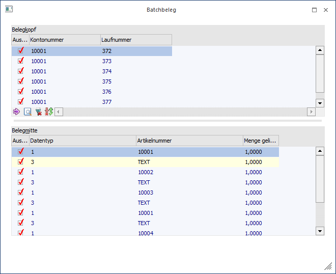
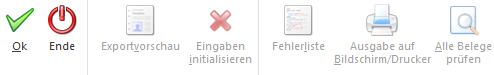

Wenn bei einem Export im Batchbeleg der Button "Exportvorschau" angewählt wird, dann wird das Fenster "Exportvorschau" geöffnet. In diesem kann definiert werden, welche Belege exportiert werden sollen.
Hinweis
Für die Berücksichtigung der hier getätigten Auswahlen muss die Option "Export lt. Vorschau" aktiviert worden sein.

Ø Auswahl
Durch Aktivierung bzw. Deaktivierung der Checkbox in der Spalte "Auswahl" kann definiert werden, welche Belege exportiert werden sollen.
Hinweis
Wird in der Tabelle "Belegmitte" ein Artikel deaktiviert, dann wird automatisch der entsprechende Beleg ebenfalls deaktiviert.
Tabellenbuttons
Ø zur nächsten Fehlerzeile wechseln
Dieser Button steht nur in der Importprüfung zur Verfügung (siehe Kapitel "Batchbeleg - Importprüfung").
Ø Aktuellen Beleg prüfen
Dieser Button steht nur in der Importprüfung zur Verfügung (siehe Kapitel "Batchbeleg - Importprüfung").
Ø Alle Zeilen selektieren
Mit dieser Funktion können alle Zeilen selektiert / aktiviert werden.
Ø Selektion umkehren
Durch Anwählen dieses Buttons werden alle aktivierten Datensätze deaktiviert bzw. alle deaktivierten Datensätze aktiviert.
Ø Ausgabe Excel
Durch Anwahl des Buttons "Ausgabe Excel" wird der Inhalt der Tabelle nach Microsoft Excel übergeben.
Ø Tabelleneinstellungen speichern
Die Spalten einer Tabelle können grundsätzlich an beliebige Positionen verschoben, bzw. in der Breite entsprechend angepasst werden. Durch Anwahl des Buttons "Tabelleneinstellungen speichern" werden die Einstellungen benutzerspezifisch gespeichert und bei dem nächsten Aufruf des Programmpunktes wieder vorgeschlagen.
Ø Gesamteinstellungen speichern
Im Gegensatz zu "Tabelleneinstellungen speichern" können mit "Gesamteinstellungen speichern" mehrere Tabellenaufbauten gespeichert und nach Wunsch geladen werden. Zusätzlich werden Sonderfunktionen der Tabelle (z.B. "Spalte gruppieren") ebenfalls bei der Speicherung bedacht.
Buttons

Ø Ok
Durch Anwahl des Buttons "Ok" bzw. der Taste F5 wird der Export durchgeführt.
Ø Ende
Durch Drücken des Buttons "Ende" bzw. der Taste ESC wird in das Fenster "Batchbeleg" zurückgewechselt.
Ø Exportvorschau
Dieser Button steht nur im Hauptfenster des Batchbelegs zur Verfügung.
Ø Eingaben initialisieren
Dieser Button steht nur im Hauptfenster des Batchbelegs zur Verfügung.
Ø Fehlerliste
Dieser Button steht nur in der Importprüfung zur Verfügung (siehe Kapitel "Batchbeleg - Importprüfung").
Ø Ausgabe auf Bildschirm / Drucker
Dieser Button steht nur in der Importprüfung zur Verfügung (siehe Kapitel "Batchbeleg - Importprüfung").
Ø Alle Belege prüfen
Dieser Button steht nur in der Importprüfung zur Verfügung (siehe Kapitel "Batchbeleg - Importprüfung").